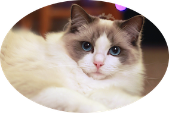

The Ragdoll is a breed of cat with a distinct colorpoint coat and blue eyes. Its morphology is large and weighty, and it has a semi-long and silky soft coat.The Ragdoll is effectively a man-made breed, created in the early 1960’s by Anne Baker, a cat breeder in California. Anne used an Angora type cat, a seal mitted (white gloves and boots over a Siamese type colour) male and a solid black cat to produce her foundation Ragdolls. The name 'Ragdoll' is derived from the tendency of individuals from the original breeding stock to go limp and relaxed when picked up.
They have dense and semi-long to long hair, a broad chest, short neck and sturdy legs. Ragdolls are distinguishable by the upside-down V-shaped markings on their foreheads, large round blue eyes, soft, thick coats, thick limbs, long tails, and soft bodies. Their color rings are commonly tricolor or bicolor.
They are best known for their docile, placid temperament and affectionate nature.
Ragdolls are often known as "dog-like cats" or "puppy-like cats", due to their tendency to follow people around, their receptiveness to handling, and their relative lack of aggressiveness towards other pets.Ragdolls are curious, and quite inclined to assist in your day-to-day activities, but would prefer to sit on your book or paperwork or watch from a sunny spot whilst you garden, rather than anything too strenuous.
Back to Start